| 日付 | 2007年4月28日（土） |
|---|---|
| 山域 | 西上州 |
| メンバー | 単独 |
| 山行形態 | 日帰り |
| アクセス | 電車 |
| ルート (Map) | 横川駅→御岳→丁須の頭→鍵沢→横川駅 |
西上州の名山・妙義山へ行く。
本当は表妙義に行きたかったが、行く度胸が無かったので、
妙義入門コースの裏妙義へ。
8:07 横川駅到着。標高385m。
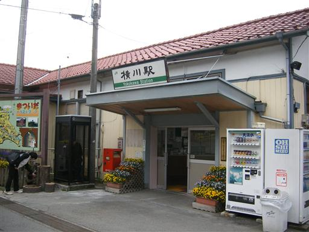
だいぶ春らしい景色になってきた。
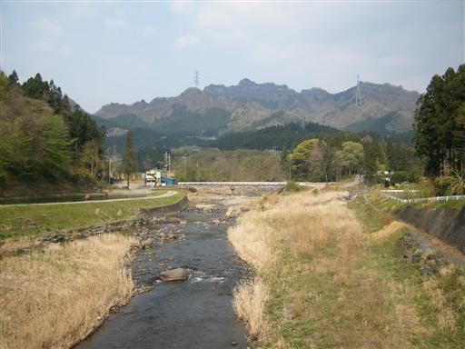
登山道入口に到着。最初は階段を登っていく。
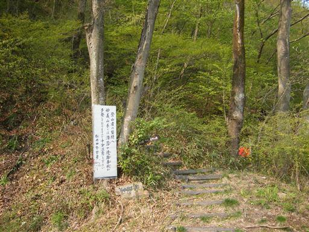
麻苧ノ滝。落差40m。
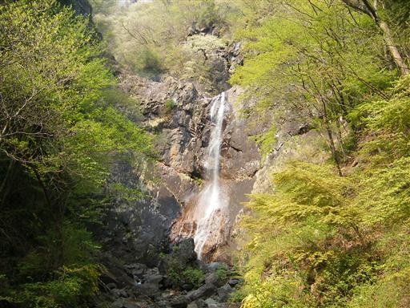
登山道は鎖場が多い。道が細くて歩きにくい。
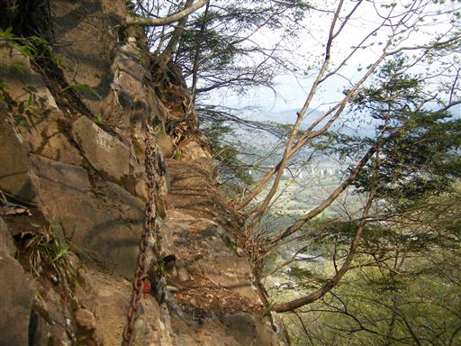
展望台からの眺め。下界が良く見渡せる。
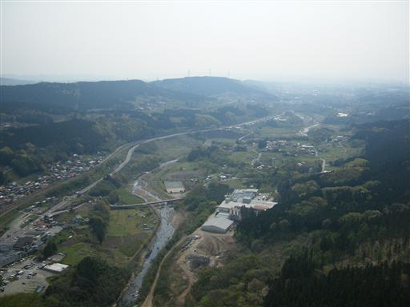
裏妙義の岩壁も良く見える。
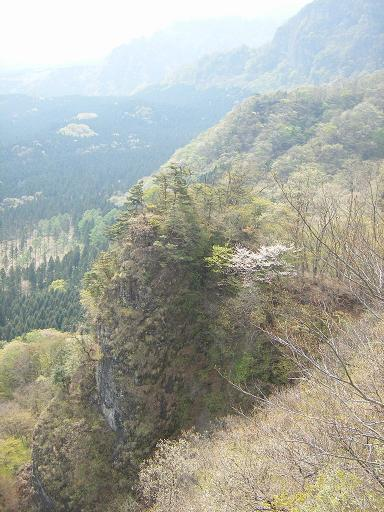
変な看板シリーズ。こんな山にもあるとは…
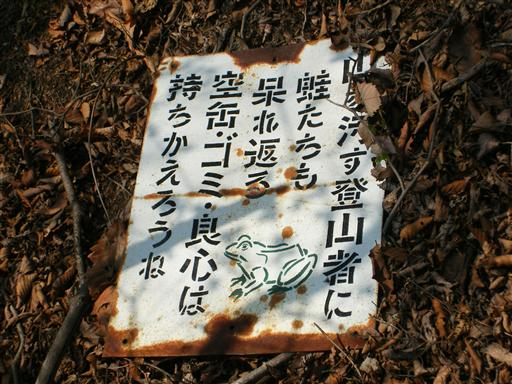
真下の木々はきれいな緑色をしている。
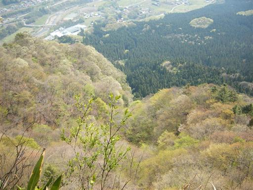
急斜面の沢を登る。
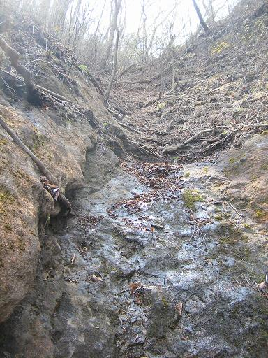
目の前に大きな岩が現れる。このあたりは奇岩が多い。
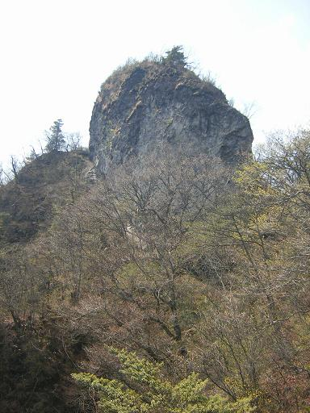
妙義独特の複雑な地形。
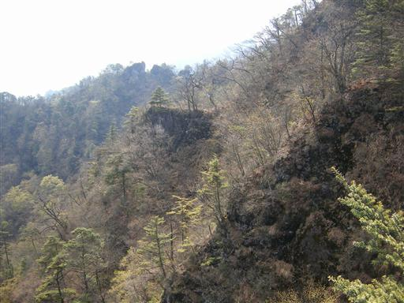
極めて細い道をトラバースする。
鎖も無いし、登山道があまりにも極悪すぎる。
どうやら道を間違えたようだ。
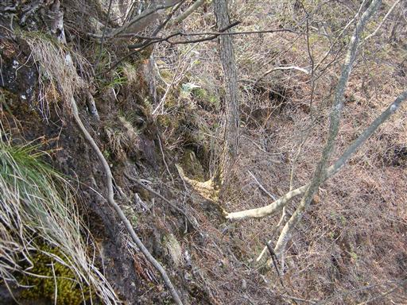
間違えた地点まで何とか引き返す。
進入禁止を意味するこの棒に気づかなかったのが原因か…
40分ほど時間をロスする。
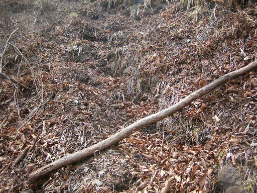
10:52 御岳山頂到着。標高963m。
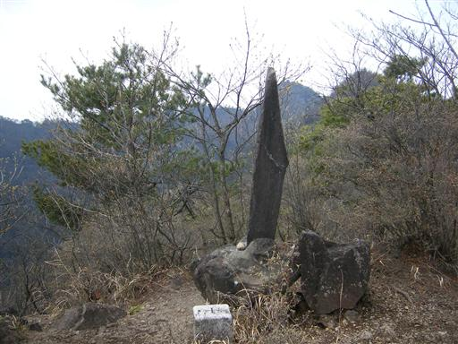
山頂から表妙義のシルエットが見える。
こんなにぎざぎざな山はそうは無い。
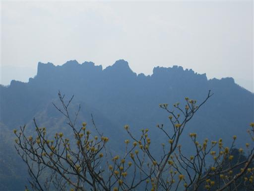
前方に目指す丁須の頭が見える。遠いところからでも良く目立つ。
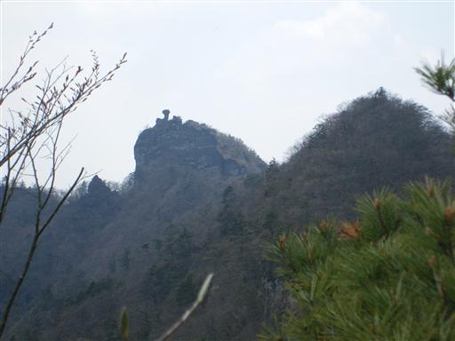
鎖場はあちこちに出てくる。噂に違わぬ難路。
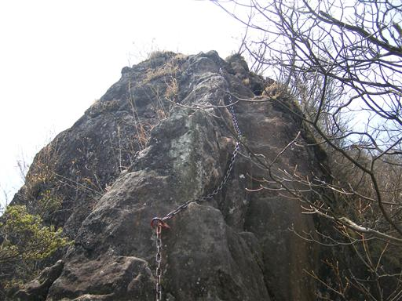
岩だらけの地形。正面に見える稜線はもはや歩行不可能。
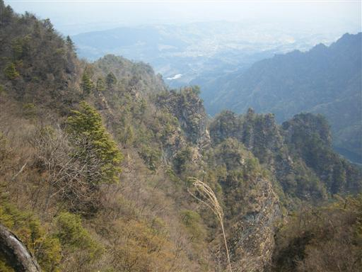
急峻な尾根道を歩いていく。アップダウンは結構激しい。

そろそろ山頂に近づいてきた。幸か不幸か他に登山者は誰もいない。
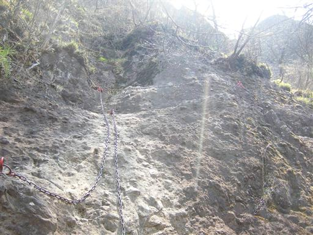
狭い岩壁をトラバース。
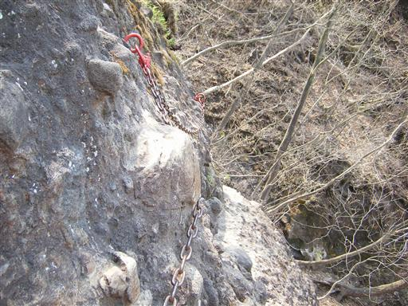
丁須の頭直下に到着。最後の鎖場を登る。
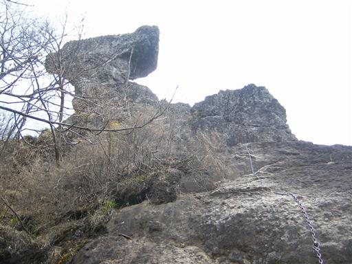
11:47 丁須の頭到着。標高1057m。
この岩には鎖が垂れ下がっていて登ることができるが、
極めて危険とのことなので自重。またの機会に…
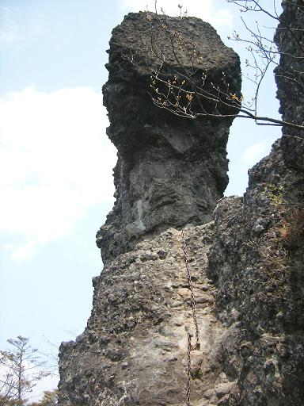
山頂からの眺め。裏妙義の奇岩が見渡せる。
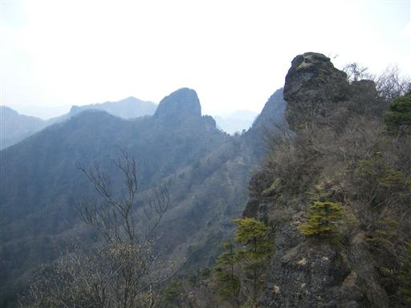
表妙義の山々も良く見える。
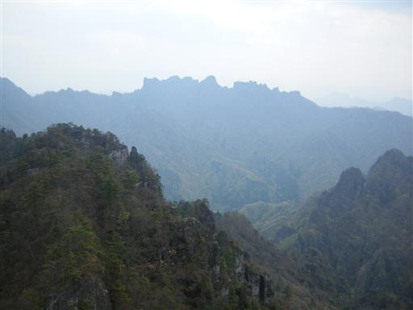
山頂の風景。ここには先客（1グループ2名）がいた。
本日の山行で唯一会った人たち。
12:07 昼食をとって山頂出発。
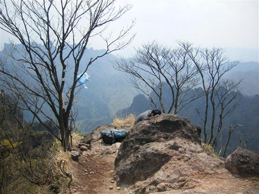
帰りは沢コースを下る。
いきなり連続の長い鎖場。全く楽をさせてくれない登山道だ。
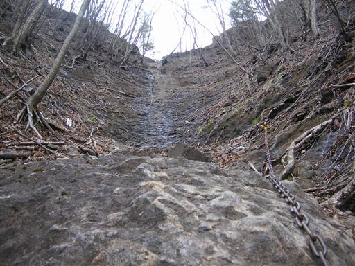
第二不動の滝に到着。複雑な岩盤を流れる水が美しい。
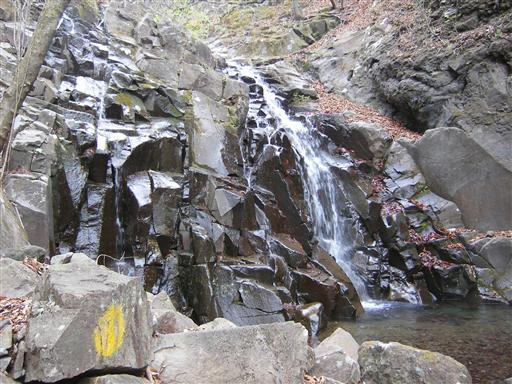
登山道はようやく平穏無事になる。
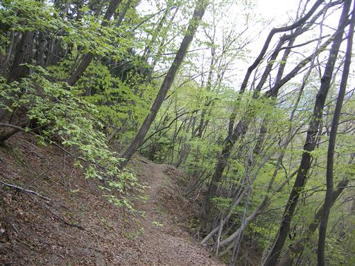
無事下山。雨がぱらついてきた。
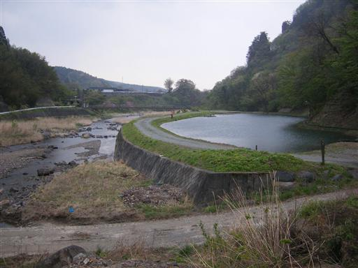
13:28 横川駅到着。
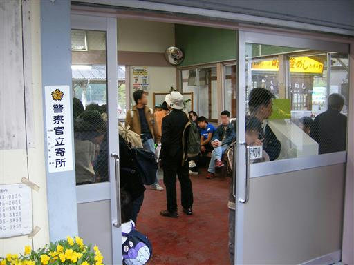